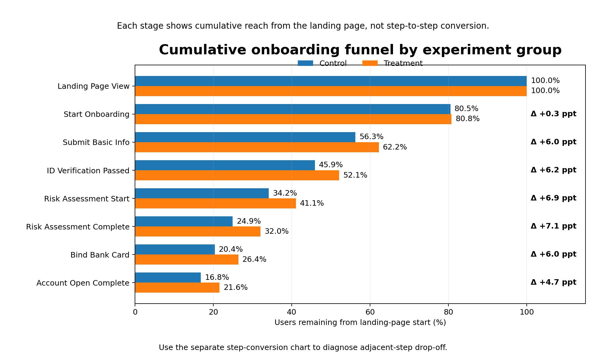
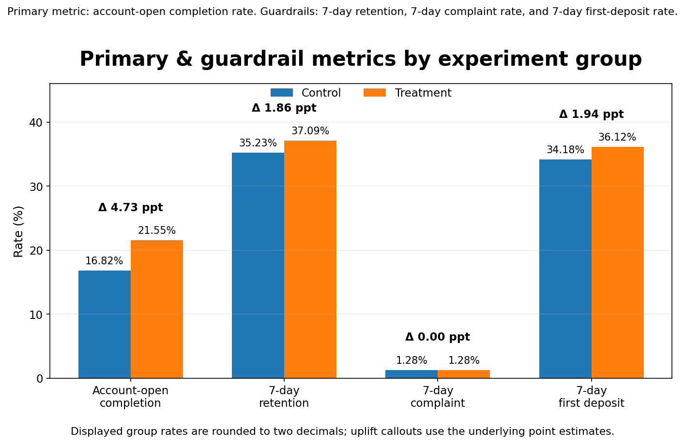
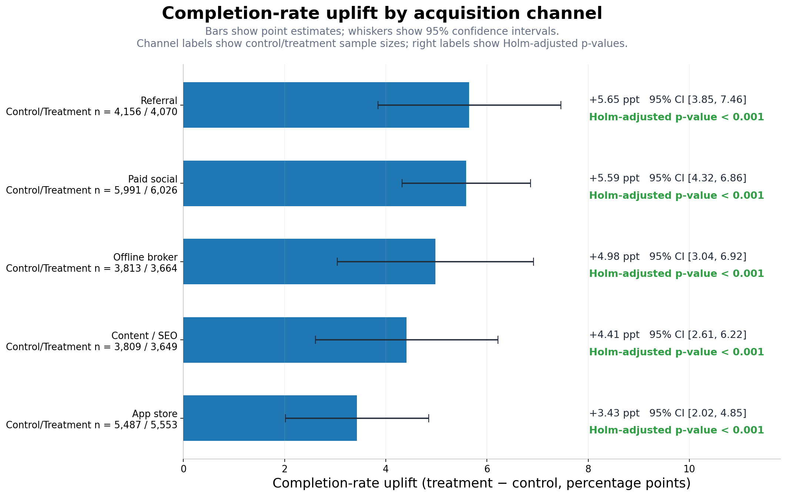
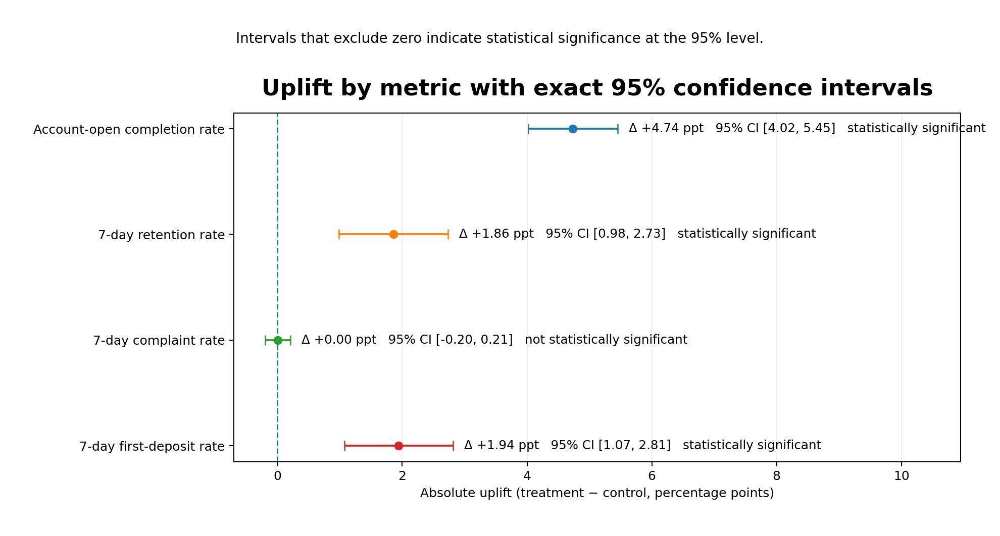

结论摘要
结论
这轮 treatment 值得进入灰度上线，更重要的是，它表明 前中段信息填写与风险测评阶段 才是主要流失瓶颈，而不是最后一步收口。
上线建议
主指标显著提升，留存同步改善，投诉率未见显著恶化。优先在 Referral 与 Paid social 两个 uplift 更高且样本更稳健的渠道先行灰度。
关键机制
相较于“最后一步收口”，treatment 更明显地改善了 基础信息提交、进入风险测评、风险测评完成 三个相邻阶段之间的推进效率。
潜在业务价值
若同等 uplift 可稳定外推，则每 10 万 landing 用户约可多带来 4,736 个开户完成、1,858 个 7 日留存 与 1,940 个 7 日首充。
下一步实验
当前 treatment 把 表单精简、进度条提示、关键疑问解释 打包上线。下一轮应拆解单因素贡献，避免组合实验难以归因。
业务问题与假设
券商新客开户链路通常包含基础资料填写、身份校验、风险测评、绑卡与开户注册等多个高摩擦步骤。
业务痛点：流程长、表单重、解释不足，导致新客在关键环节出现显著 drop-off。
核心假设：若通过表单精简、进度提示与关键疑问解释降低认知成本，开户完成率应显著提升，且不应伤害体验护栏。
评估标准：不仅看主指标 uplift，还同时看留存、投诉与后续可转化业务结果，避免“用更高转化换来更差体验”。
实验设计
随机化单位
user-level 50/50 分流。Control = 23,256，Treatment = 22,962。
观测窗口
2026-01-01 至 2026-03-16，共 75 天，覆盖完整开户链路与 7 日后验指标。
指标体系
- Primary：开户完成率
- Guardrails：7 日留存率、7 日投诉率
- Exploratory：7 日首充率
统计方法
Balance check + 双样本比例检验 + 95% CI；渠道分层结果额外做 Holm 多重比较校正。
平衡性检查
渠道、设备、来源意图、年龄段分布均未见显著失衡，说明 treatment 效果更有可能来自流程改动本身，而不是样本结构偏差。
channel: p = 0.205device: p = 0.286intent: p = 0.421age: p = 0.936
样本识别能力
按当前样本规模估算，在 α = .05、80% power 条件下，主指标约可识别 0.99 ppt 的绝对 uplift，而本次实际观察到的 uplift 为 4.74 ppt。
解释含义：不是“勉强显著”，而是 observed effect 显著大于当前样本的可识别下限。
实验风险与有效性威胁
为了让这个案例更接近真实业务实验，除了 balance check，还需要主动讨论可能削弱因果解释力的风险来源。下面这部分不改变当前 headline result，但会决定是否适合直接全量上线。
01 SRM（Sample Ratio Mismatch）
Control / Treatment 为 23,256 / 22,962，偏离理想 50/50 分流约 0.64%，当前看不到明显异常分流信号。它意味着本次结果没有首先被“样本比例失真”破坏。
但正式项目里，SRM 仍然应该是第一道健康检查：一旦 assignment log、exposure log 与 analysis cohort 对不上，后续所有 uplift 解释都会失去基础。
02 污染 / Interference
如果用户重复进入开户链路、切换渠道回流、被客服人工补救、或在实验期内触发额外运营触达，就可能让 control 与 treatment 的暴露边界变得模糊。
这会让 uplift 同时混入“流程优化效果”和“后续运营干预效果”。因此正式落地时需要锁定首曝分组、对 user_id 去重，并尽量剔除人工介入造成的二次影响。
03 跨设备 / Identity Stitching
同一用户若在 mobile / web 或不同设备间切换，而标识未正确合并，可能出现“同一用户跨组暴露”或步骤漏记，导致整体转化被高估或低估。
这类问题在开户注册链路尤其常见，因为 OTP、银行卡验证、KYC 上传等动作往往发生在不同端口。正式项目应以稳定 account key 或 device graph 完成 join，并单独监控 cross-device overlap。
04 观察窗截断 / Mature-window Censoring
实验截止到 2026-03-16，而 7 日留存、7 日首充需要完整成熟窗。如果尾部用户尚未走满 7 天，就会系统性低估 post metrics，且可能对不同组影响不对称。
因此报告时应只保留 mature cohort，或在结果页明确说明尾部 cohort 是否被截断。短期 uplift 若没有成熟窗保护，很容易把“时间不够”误读为“效果变弱”。
05 Novelty Effect
进度条与 FAQ 解释类改动，早期可能因为“新鲜感”和更高注意力而短暂抬升启动率与风险问答完成率；如果用户适应后回落，短期 uplift 可能高于长期稳定 uplift。
这也是为什么当前更适合灰度，而不是直接全量。上线后应该按周跟踪 effect drift，观察 uplift 是否快速回落，尤其是前中段步骤而非最终开户完成率。
06 为什么这部分重要
如果不主动讨论这些威胁，项目很容易看起来像“只会报显著性”的作品集案例。把风险显性化，反而更接近真实业务中的实验复盘：结果成立是一层，结果为什么值得信、能不能放量，是另一层。
实验结果
核心指标同时展示 effect size、95% CI 与对应业务含义。
| 指标 | Control | Treatment | 绝对变化 | 95% CI | 结论 |
|---|---|---|---|---|---|
| 开户完成率 | 16.82% | 21.55% | +4.74 ppt | [4.02, 5.45] | 主指标显著提升 |
| 7 日留存率 | 35.23% | 37.09% | +1.86 ppt | [0.98, 2.73] | 体验质量同步改善 |
| 7 日投诉率 | 1.277% | 1.280% | +0.00 ppt | [-0.20, 0.21] | 无显著差异 |
| 7 日首充率（探索性） | 34.18% | 36.12% | +1.94 ppt | [1.07, 2.81] | 商业结果方向一致 |
漏斗诊断：效果主要发生在哪里
为了定位 uplift 的主要来源，需要同时观察累计 reach 与相邻步骤转化率，判断改善究竟发生在哪个环节。
Step-to-step conversion 变化
| 相邻阶段 | Control | Treatment | 变化 |
|---|---|---|---|
| Landing → Start onboarding | 80.50% | 80.79% | +0.29 ppt |
| Start → Submit basic info | 69.90% | 77.04% | +7.14 ppt |
| Submit basic info → ID pass | 81.60% | 83.73% | +2.13 ppt |
| ID pass → Risk assessment start | 74.41% | 78.81% | +4.40 ppt |
| Risk start → Risk complete | 72.90% | 78.01% | +5.11 ppt |
| Risk complete → Bind bank card | 81.72% | 82.35% | +0.64 ppt |
| Bind bank card → Complete | 82.63% | 81.69% | -0.94 ppt |
关键诊断
- 最大贡献点：基础信息提交阶段提升 +7.14 ppt，说明表单精简显著降低了填写摩擦与放弃率。
- 第二贡献点：进入风险测评与完成风险测评分别提升 +4.40 ppt 与 +5.11 ppt，说明进度条提示与关键疑问解释有效降低了理解成本。
- 整体结论：本轮 uplift 主要来自前中段摩擦下降，而不是最后一步收口改善。
反常结果解释：为什么最后一步略降，整体结论仍然成立
现象：bind bank card → account open complete 的 step conversion 略降 0.94 ppt，看起来与“整体正向 uplift”相反。
- 分母构成变化：treatment 把更多中等意向用户推进到了更后面阶段，最后一步的分母因此扩大，进入终点的人群结构不再与 control 完全相同。换句话说，更多人能走到末端，但其中一部分本来就不是最强意向用户，末端收口率略被摊薄是可能的。
- 末端摩擦并未被当前改动直接触及：表单精简、进度条、FAQ 主要作用在前中段认知负担；而绑卡后的最终开户完成，往往更多受 OTP、银行卡验证、KYC 复核、外部跳转等待等因素影响。这些摩擦没有被当前 treatment 真正改掉。
- 幅度大小不对称：末端的 -0.94 ppt 明显小于前中段 +7.14 / +4.40 / +5.11 ppt 的提升，因此 end-to-end completion 仍然显著抬升。它更像“新增流量的质量分布更广”，而不是“整体体验恶化”。
渠道分层与灰度优先级
不是所有渠道都应该同时全量。更成熟的做法是：先看分层效果，再决定灰度先后顺序与资源投入重点。
| 渠道 | Control | Treatment | Uplift | 建议 |
|---|---|---|---|---|
| Referral | 19.95% | 25.60% | +5.65 ppt | 第一优先级灰度 |
| Paid social | 12.05% | 17.64% | +5.59 ppt | 第一优先级灰度 |
| Offline broker | 21.79% | 26.77% | +4.98 ppt | 第二优先级 |
| Content / SEO | 17.48% | 21.90% | +4.41 ppt | 第二优先级 |
| App store | 15.73% | 19.16% | +3.43 ppt | 保守推进 |
为什么这样灰度
- Referral / Paid social 优先：绝对 uplift 更高，说明对高摩擦来源用户更有效，资源投入回报更直接。
- 不是直接全量：当前 treatment 属于多因素打包改动，且开户流程还受合规、KYC 成功率与客服承压影响，先灰度更稳妥。
- 灰度阶段继续跟踪：7 日投诉率、身份验证失败率、客服咨询量、首充率与高价值用户激活质量。
潜在业务价值
在缺少长期收入口径时，以下以“每 10 万 landing 用户可新增的关键行为数”表述短中期业务价值。
图表
以下图表分别对应整体漏斗 reach、主指标与护栏、渠道 uplift 以及 overall effects 的置信区间。




局限性与下一步
当前局限性
- 本案例使用 synthetic data 复现券商开户实验分析流程，相关结论仅用于方法演示。
- 当前 treatment 为多项改动打包，因此只能识别“组合效果”，不能直接识别每个设计元素的独立贡献。
- 7 日留存与 7 日首充仍属于短期质量指标，不能替代长期入金质量、长期交易活跃或客户生命周期价值。
- 本页新增讨论了 SRM、污染、跨设备、成熟窗截断与 novelty effect，但这些风险在当前案例中主要是“应被显性化并持续监控的真实威胁”，并不代表已由现有数据完全排除。
下一步实验建议
- 拆解单因素测试：表单精简 / 进度条 / FAQ 解释。
- 新增护栏：身份验证失败率、客服咨询量、风险问答中断率。
- 新增日志：首曝日志、曝光日志、客服人工介入标签、cross-device stitching 质量标记。
- 新增分层：新老客、设备类型、来源意图、是否高价值潜客。
- 补长期指标：首月入金、首月交易活跃、30 日留存，并按周跟踪 novelty effect 的 effect drift。
仓库内容
数据文件： ab_assignment.csv · onboarding_events.csv · post_metrics.csv
分析文件： analysis.py · notebooks/brokerage_abtest_analysis.ipynb · sql/
展示文件： index.html · README.md · reports/brokerage_abtest_report.md · reports/brokerage_abtest_report.html